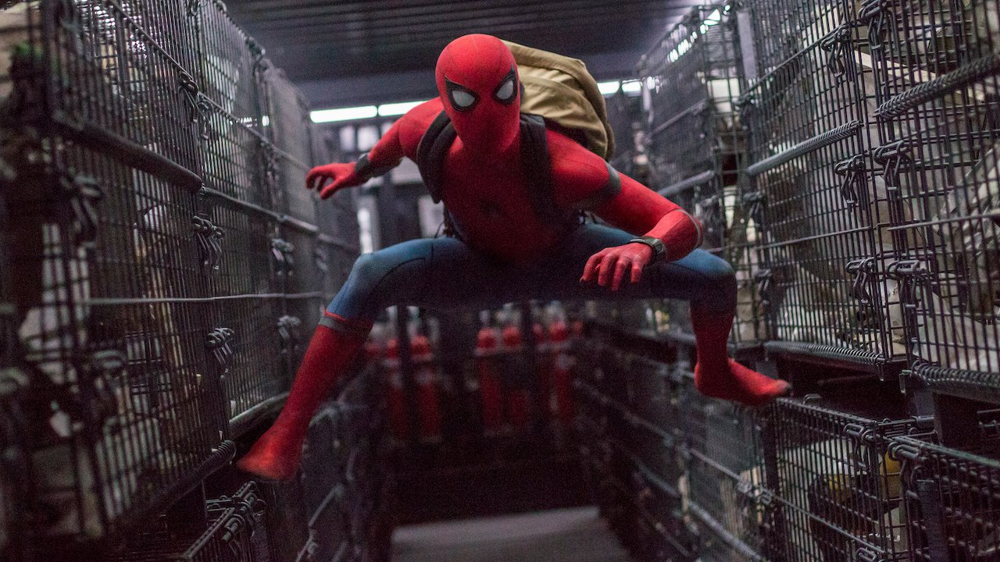

Spider-man: Homecoming
Spider-man: Homecoming (2017) -filmweb

Młody Peter Parker/Spider-Man (Tom Holland), poszukuje swojego nowego ego superbohatera.
Zafascynowany przygodą z Avengersami, wraca do domu, gdzie mieszka wraz z ciotką May (Marisa Tomei).
Cały czas pozostaje pod czujnym okiem swego mentora – Tony’ego Starka (Robert Downey Jr.).
Próbuje wrócić do normalnego życia, unikając myśli,
że jest kimś więcej niż tylko "Spider-Manem z sąsiedztwa".
Jednak kiedy pojawia się Vulture (Michael Keaton), nowy groźny wróg, wszystko,
co dla Petera ważne, staje się zagrożone.
Strona główna